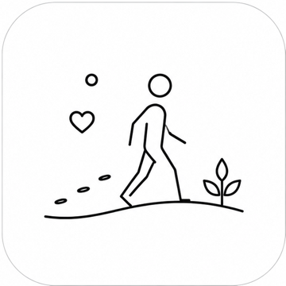
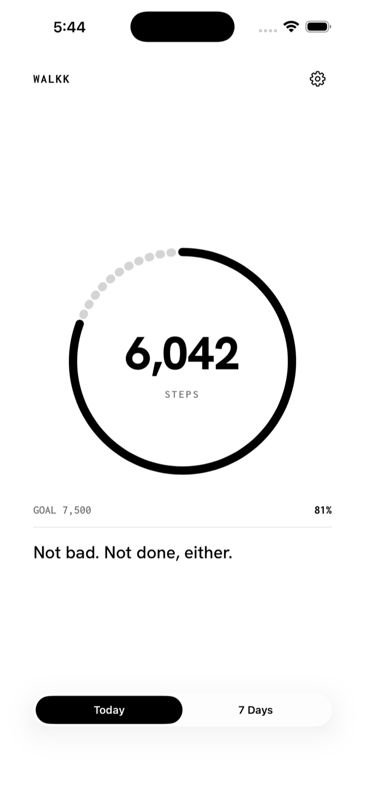
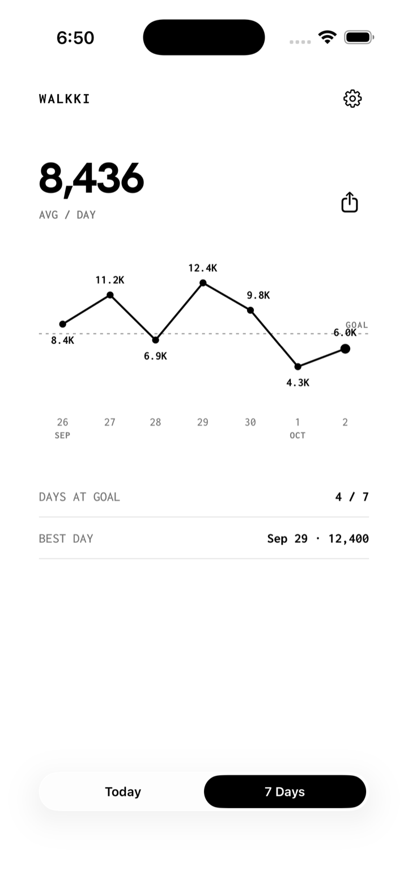
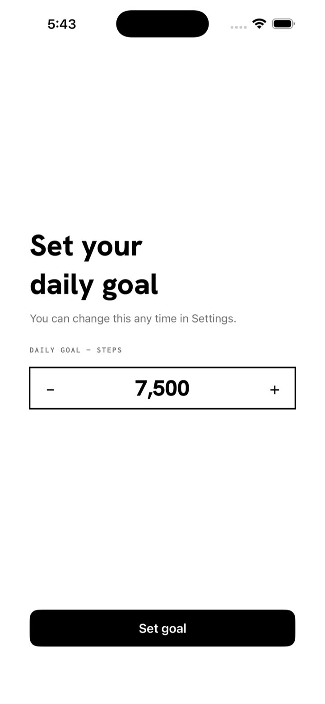

Step counter · iPhone & Apple Watch
Walkki reads your step count from Apple Health and shows it clearly. No account, no cloud, no tracking.



Why Walkki
One number, front and center. Open the app, glance at your Home Screen, or check your wrist.
What it does
A single ring for today's steps against your daily goal, and a line to keep you moving.
Your last seven days on one chart, with your goal line, your average, and your best day.
Tap the share icon to copy your week as an image, ready to paste anywhere.
An optional nudge at 5pm if you're under half your goal, and a summary at 8pm.
The same ring on your wrist. Tap it to see the day's quote.
Walkki only reads from Apple Health. Nothing is uploaded and nothing leaves your phone.
Support
Questions, bugs, or ideas — send an email and you'll get a reply from the Theprahok Inc. team.
Email support visalbotr@gmail.comWalkki needs permission to read Steps from Apple Health. Open the Health app, tap your profile picture, then Apps, then Walkki, and turn on Steps.
Walkki shows the total Apple Health has for today, which combines your iPhone and Apple Watch. Apps that count only the iPhone's own steps can show a lower number.
iOS decides how often widgets refresh, so the count can lag. Tap the Home Screen widget to refresh it right away. While your phone is locked, Health data can't be read, so the Lock Screen widget shows the last count it saw.
Check that notifications are on for Walkki in the Settings app, and that Bug me or Daily summary is on in Walkki's settings. The 5pm nudge only arrives if you're under half your goal.
Tap the gear in the top corner, then Daily goal. Your Apple Watch picks up the new goal automatically.
No. There is no account and no server. Read the privacy policy.